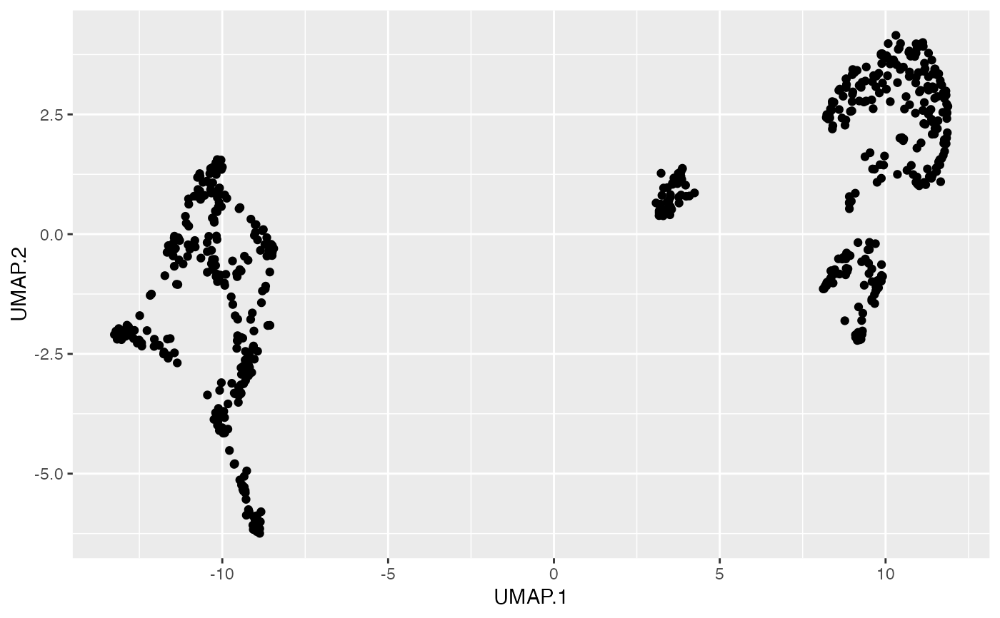

liger object is the main data container for LIGER
analysis in R. The slot datasets is a list where each element should
be a ligerDataset object containing dataset specific
information, such as the expression matrices. The other parts of liger object
stores information that can be shared across the analysis, such as the cell
metadata and factorization result matrices.
This manual provides explanation to the liger object structure as well
as usage of class-specific methods. Please see detail sections for more
information.
For liger objects created with older versions of rliger package,
please try updating the objects individually with
convertOldLiger.
# S4 method for liger
show(object)
# S4 method for liger
dim(x)
# S4 method for liger
dimnames(x)
# S4 method for liger,list
dimnames(x) <- value
# S4 method for liger,character,missing,ANY
[(x, i, j, ..., drop = TRUE)
# S4 method for liger,missing,index,ANY
[(x, i, j, ..., drop = TRUE)
# S4 method for liger,character,index,ANY
[(x, i, j, ..., drop = TRUE)
datasets(x, check = NULL)
datasets(x, check = TRUE) <- value
# S4 method for liger
datasets(x, check = NULL)
# S4 method for liger,logical
datasets(x, check = TRUE) <- value
# S4 method for liger,missing
datasets(x, check = TRUE) <- value
dataset(x, dataset = NULL)
dataset(x, dataset, type = NULL, qc = TRUE) <- value
# S4 method for liger,character_OR_NULL
dataset(x, dataset = NULL)
# S4 method for liger,missing
dataset(x, dataset = NULL)
# S4 method for liger,numeric
dataset(x, dataset = NULL)
# S4 method for liger,character,missing,ANY,ligerDataset
dataset(x, dataset, type = NULL, qc = TRUE) <- value
# S4 method for liger,character,ANY,ANY,matrixLike
dataset(x, dataset, type = c("rawData", "normData", "scaleData"), qc = FALSE) <- value
# S4 method for liger,character,missing,ANY,`NULL`
dataset(x, dataset, type = NULL, qc = TRUE) <- value
# S4 method for liger
names(x)
# S4 method for liger,character
names(x) <- value
# S4 method for liger
length(x)
cellMeta(
x,
columns = NULL,
useDataset = NULL,
cellIdx = NULL,
as.data.frame = FALSE,
...
)
cellMeta(x, columns = NULL, useDataset = NULL, cellIdx = NULL, check = FALSE) <- value
# S4 method for liger,`NULL`
cellMeta(
x,
columns = NULL,
useDataset = NULL,
cellIdx = NULL,
as.data.frame = FALSE,
...
)
# S4 method for liger,character
cellMeta(
x,
columns = NULL,
useDataset = NULL,
cellIdx = NULL,
as.data.frame = FALSE,
...
)
# S4 method for liger,missing
cellMeta(
x,
columns = NULL,
useDataset = NULL,
cellIdx = NULL,
as.data.frame = FALSE,
...
)
# S4 method for liger,missing
cellMeta(x, columns = NULL, useDataset = NULL, cellIdx = NULL, check = FALSE) <- value
# S4 method for liger,character
cellMeta(x, columns = NULL, useDataset = NULL, cellIdx = NULL, check = FALSE) <- value
# S4 method for liger,ANY,missing
[[(x, i, j, ...)
# S4 method for liger,ANY,missing
[[(x, i, j, ...) <- value
# S4 method for liger
$(x, name)
# S4 method for liger
$(x, name) <- value
defaultCluster(x, useDatasets = NULL, ...)
defaultCluster(x, name = NULL, useDatasets = NULL, ...) <- value
# S4 method for liger
defaultCluster(x, useDatasets = NULL, droplevels = FALSE, ...)
# S4 method for liger,ANY,ANY,character
defaultCluster(x, name = NULL, useDatasets = NULL, ...) <- value
# S4 method for liger,ANY,ANY,factor
defaultCluster(x, name = NULL, useDatasets = NULL, droplevels = TRUE, ...) <- value
# S4 method for liger,ANY,ANY,`NULL`
defaultCluster(x, name = NULL, useDatasets = NULL, ...) <- value
dimRed(x, name = NULL, useDatasets = NULL, ...)
dimRed(x, name = NULL, useDatasets = NULL, ...) <- value
# S4 method for liger,missing
dimRed(x, name = NULL, useDatasets = NULL, ...)
# S4 method for liger,character
dimRed(x, name = NULL, useDatasets = NULL, ...)
# S4 method for liger,character,ANY,matrixLike
dimRed(x, name = NULL, useDatasets = NULL, asDefault = NULL, ...) <- value
defaultDimRed(x, useDatasets = NULL)
defaultDimRed(x, name, useDatasets = NULL) <- value
# S4 method for liger
defaultDimRed(x, useDatasets = NULL)
# S4 method for liger,missing,ANY,character
defaultDimRed(x, name = NULL, useDatasets = NULL) <- value
# S4 method for liger,character,ANY,matrixLike
defaultDimRed(x, name, useDatasets = NULL) <- value
varFeatures(x)
varFeatures(x, check = TRUE) <- value
# S4 method for liger
varFeatures(x)
# S4 method for liger,ANY,character
varFeatures(x, check = TRUE) <- value
# S3 method for liger
fortify(model, data, ...)
# S3 method for liger
c(...)
commands(x, funcName = NULL, arg = NULL)
# S4 method for liger
commands(x, funcName = NULL, arg = NULL)
# S4 method for liger
rawData(x, dataset = NULL)
# S4 method for liger,ANY,ANY,matrixLike_OR_NULL
rawData(x, dataset = NULL, check = TRUE) <- value
# S4 method for liger,ANY,ANY,H5D
rawData(x, dataset = NULL, check = TRUE) <- value
# S4 method for liger
normData(x, dataset = NULL)
# S4 method for liger,ANY,ANY,matrixLike_OR_NULL
normData(x, dataset = NULL, check = TRUE) <- value
# S4 method for liger,ANY,ANY,H5D
normData(x, dataset = NULL, check = TRUE) <- value
# S4 method for liger,ANY
scaleData(x, dataset = NULL)
# S4 method for liger,ANY,ANY,matrixLike_OR_NULL
scaleData(x, dataset = NULL, check = TRUE) <- value
# S4 method for liger,ANY,ANY,H5D
scaleData(x, dataset = NULL, check = TRUE) <- value
# S4 method for liger,ANY,ANY,H5Group
scaleData(x, dataset = NULL, check = TRUE) <- value
# S4 method for liger,character
scaleUnsharedData(x, dataset = NULL)
# S4 method for liger,numeric
scaleUnsharedData(x, dataset = NULL)
# S4 method for liger,ANY,ANY,ANY
getMatrix(
x,
slot = c("rawData", "normData", "scaleData", "scaleUnsharedData", "H", "V", "U", "A",
"B", "W", "H.norm"),
dataset = NULL,
returnList = FALSE
)
# S4 method for liger,ANY
getH5File(x, dataset = NULL)A liger object
Check detail sections for requirements.
Feature and cell index for `[` method. For `[[`
method, use a single variable name with i while j is not
applicable.
See detailed sections for explanation.
Not applicable.
Logical, whether to perform object validity check on setting new
value. Users are not supposed to set FALSE here.
Name or numeric index of a dataset
When using dataset<- with a matrix like value,
specify what type the matrix is. Choose from "rawData",
"normData" or "scaleData".
Logical, whether to perform general qc on added new dataset.
The names of available variables in cellMeta slot. When
as.data.frame = TRUE, please use variable names after coercion.
Valid cell subscription to subset retrieved variables. Default
NULL uses all cells.
Logical, whether to apply
as.data.frame on the subscription. Default FALSE.
The name of available variables in cellMeta slot or the
name of a new variable to store.
Setter or getter method should only apply on cells in
specified datasets. Any valid character, numeric or logical subscriber is
acceptable. Default NULL works with all datasets.
fortify method required argument. Not used.
See Command records section.
Name of slot to retrieve matrix from. Options shown in Usage.
Logical, whether to force return a list even when only one
dataset-specific matrix (i.e. expression matrices, H, V or U) is requested.
Default FALSE.
See detailed sections for explanetion.
datasetslist of ligerDataset objects. Use generic
dataset, dataset<-, datasets or datasets<- to
interact with. See detailed section accordingly.
cellMetaDFrame object for cell metadata. Pre-existing
metadata, QC metrics, cluster labeling, low-dimensional embedding and etc.
are all stored here. Use generic cellMeta, cellMeta<-,
$, [[]] or [[]]<- to interact with. See detailed section
accordingly.
varFeaturesCharacter vector of feature names. Use generic
varFeatures or varFeatures<- to interact with. See detailed
section accordingly.
WMatrix of gene loading for each factor. See
runIntegration.
H.normMatrix of aligned factor loading for each cell. See
quantileNorm and runIntegration.
commandsList of ligerCommand objects. Record of
analysis. Use commands to retrieve information. See detailed section
accordingly.
unsList for unstructured meta-info of analyses or presets.
versionRecord of version of rliger2 package
For a liger object, the column orientation is assigned for
cells. Due to the data structure, it is hard to define a row index for the
liger object, which might contain datasets that vary in number of
genes.
Therefore, for liger objects, dim and dimnames returns
NA/NULL for rows and total cell counts/barcodes for the
columns.
For direct call of dimnames<- method, value should be a list
with NULL as the first element and valid cell identifiers as the
second element. For colnames<- method, the character vector of cell
identifiers. rownames<- method is not applicable.
For more detail of subsetting a liger object or a
ligerDataset object, please check out subsetLiger
and subsetLigerDataset. Here, we set the S4 method
"single-bracket" [ as a quick wrapper to subset a liger object.
Note that j serves as cell subscriptor which can be any valid index
refering the collection of all cells (i.e. rownames(cellMeta(obj))).
While i, the feature subscriptor can only be character vector because
the features for each dataset can vary. ... arugments are passed to
subsetLiger so that advanced options are allowed.
datasets() method only accesses the datasets slot, the list of
ligerDataset objects. dataset() method accesses a single
dataset, with subsequent cell metadata updates and checks bonded when adding
or modifying a dataset. Therefore, when users want to modify something inside
a ligerDataset while no cell metadata change should happen, it is
recommended to use: datasets(x)[[name]] <- ligerD for efficiency,
though the result would be the same as dataset(x, name) <- ligerD.
length() and names() methods are implemented to access the
number and names of datasets. names<- method is supported for
modifying dataset names, with taking care of the "dataset" variable in cell
metadata.
For liger object, rawData(), normData,
scaleData() and scaleUnsharedData() methods are exported for
users to access the corresponding feature expression matrix with
specification of one dataset. For retrieving a type of matrix from multiple
datasets, please use getMatrix() method.
When only one matrix is expected to be retrieved by getMatrix(), the
matrix itself will be returned. A list will be returned if multiple matrices
is requested (by querying multiple datasets) or returnList is set to
TRUE.
Three approaches are provided for access of cell metadata. A generic function
cellMeta is implemented with plenty of options and multi-variable
accessibility. Besides, users can use double-bracket (e.g.
ligerObj[[varName]]) or dollor-sign (e.g. ligerObj$nUMI) to
access or modify single variables.
For users' convenience of generating a customized ggplot with available cell
metadata, the S3 method fortify.liger is implemented. With this under
the hook, users can create simple ggplots by directly starting with
ggplot(ligerObj, aes(...)) where cell metadata variables can be
directly thrown into aes().
The generic defaultCluster works as both getter and setter. As a
setter, users can do defaultCluster(obj) <- "existingVariableName" to
set a categorical variable as default cluster used for visualization or
downstream analysis. Users can also do defaultCluster(obj,
"newVarName") <- factorOfLabels to push new labeling into the object and set
as default. For getter method, the function returns a factor object of the
default cluster labeling. Argument useDatasets can be used for
requiring that given or retrieved labeling should match with cells in
specified datasets. We generally don't recommend setting "dataset" as
a default cluster because it is a preserved (always existing) field in
metadata and can lead to meaningless result when running analysis that
utilizes both clustering information and the dataset source information.
Currently, low-dimensional representaion of cells, presented as dense
matrices, are all stored in cellMeta slot, and can totally be accessed
with generics cellMeta and cellMeta<-. In addition to that,
we provide specific generics dimRed and dimRed<- for getting
and setting matrix like cell metadata, respectively. Adding a matrix to the
object looks as simple as dimRed(obj, "name") <- matrixLike. It can
be retrived back with dimRed(obj, "name"). Similar to having a default
cluster labeling, we also constructed the feature of default dimRed. It can
be set with defaultDimRed(obj) <- "existingMatLikeVar" and the matrix
can be retrieved with defaultDimRed(obj).
The varFeatures slot allows for character vectors of gene names.
varFeatures(x) returns this vector and value for
varFeatures<- method has to be a character vector or NULL.
The replacement method, when check = TRUE performs checks on gene
name consistency check across the scaleData, H, V slots
of inner ligerDataset objects as well as the W and
H.norm slots of the input liger object.
The list of datasets slot,
the rows of cellMeta slot and the list of commands slot will
be simply concatenated. Variable features in varFeatures slot will be
taken a union. The \(W\) and \(H.norm\) matrices are not taken into
account for now.
rliger functions, that perform calculation and update the liger
object, will be recorded in a ligerCommand object and stored in the
commands slot, a list, of liger object. Method
commands() is implemented to retrieve or show the log history.
Running with funcName = NULL (default) returns all command labels.
Specifying funcName allows partial matching to all command labels
and returns a subset list (of ligerCommand object) of matches (or
the ligerCommand object if only one match found). If arg is
further specified, a subset list of parameters from the matches will be
returned. For example, requesting a list of resolution values used in
all louvain cluster attempts: commands(ligerObj, "louvainCluster",
"resolution")
# Methods for base generics
pbmcPlot
#> An object of class liger with 600 cells
#> datasets(2): ctrl (300 cells), stim (300 cells)
#> cellMeta(4): dataset, nUMI, leiden_cluster, UMAP
#> varFeatures(50): ISG15, ID3, RPL11, ..., HIST1H2AC
print(pbmcPlot)
#> An object of class liger with 600 cells
#> datasets(2): ctrl (300 cells), stim (300 cells)
#> cellMeta(4): dataset, nUMI, leiden_cluster, UMAP
#> varFeatures(50): ISG15, ID3, RPL11, ..., HIST1H2AC
dim(pbmcPlot)
#> [1] NA 600
ncol(pbmcPlot)
#> [1] 600
colnames(pbmcPlot)[1:5]
#> [1] "ctrl_AAACATACCTCGCT.1" "ctrl_AAACGGCTCTTCGC.1" "ctrl_AACACTCTAAGTAG.1"
#> [4] "ctrl_AACCGCCTCAGGAG.1" "ctrl_AACGTTCTTCCGTC.1"
pbmcPlot[varFeatures(pbmcPlot)[1:10], 1:10]
#> Mon Nov 6 16:33:41 2023 ... Subsetting dataset: ctrl
#> An object of class liger with 10 cells
#> datasets(1): ctrl (10 cells)
#> cellMeta(4): dataset, nUMI, leiden_cluster, UMAP
#> varFeatures(10): ISG15, ID3, RPL11, ..., S100A8
names(pbmcPlot)
#> [1] "ctrl" "stim"
length(pbmcPlot)
#> [1] 2
# rliger2 generics
## Retrieving dataset(s), replacement methods available
datasets(pbmcPlot)
#> $ctrl
#> An object of class ligerDataset with 300 cells
#> normData: 50 features
#>
#> $stim
#> An object of class ligerDataset with 300 cells
#> normData: 50 features
#>
dataset(pbmcPlot, "ctrl")
#> An object of class ligerDataset with 300 cells
#> normData: 50 features
dataset(pbmcPlot, 2)
#> An object of class ligerDataset with 300 cells
#> normData: 50 features
## Retrieving cell metadata, replacement methods available
cellMeta(pbmcPlot)
#> DataFrame with 600 rows and 4 columns
#> dataset nUMI leiden_cluster UMAP
#> <factor> <numeric> <factor> <matrix>
#> ctrl_AAACATACCTCGCT.1 ctrl 2151 1 6.70697:-4.70087
#> ctrl_AAACGGCTCTTCGC.1 ctrl 1916 1 6.11953:-3.43883
#> ctrl_AACACTCTAAGTAG.1 ctrl 1869 1 9.62906:-5.76486
#> ctrl_AACCGCCTCAGGAG.1 ctrl 733 0 -7.23223: 1.09265
#> ctrl_AACGTTCTTCCGTC.1 ctrl 573 0 -4.69289: 2.38874
#> ... ... ... ... ...
#> stim_TTCATGACTTATCC.1 stim 1091 3 11.50498:-3.79783
#> stim_TTCATGACTTCAGG.1 stim 431 0 -6.23811: 1.46327
#> stim_TTCGGAGATTTCAC.1 stim 1344 5 7.60062: 1.41078
#> stim_TTGACACTTCCTGC.1 stim 1423 5 7.42693: 1.01122
#> stim_TTTGCATGAACGAA.1 stim 2818 6 4.27674:-3.05098
head(pbmcPlot[["nUMI"]])
#> [1] 2151 1916 1869 733 573 1872
head(pbmcPlot$UMAP)
#> 1 2
#> ctrl_AAACATACCTCGCT.1 6.706970 -4.7008704
#> ctrl_AAACGGCTCTTCGC.1 6.119526 -3.4388267
#> ctrl_AACACTCTAAGTAG.1 9.629061 -5.7648618
#> ctrl_AACCGCCTCAGGAG.1 -7.232232 1.0926543
#> ctrl_AACGTTCTTCCGTC.1 -4.692893 2.3887372
#> ctrl_AAGAACGAAACGAA.1 7.474532 -0.7516093
## Retrieving variable features, replacement methods available
varFeatures(pbmcPlot)
#> [1] "ISG15" "ID3" "RPL11" "MARCKSL1" "RPS8" "GBP1"
#> [7] "S100A10" "S100A11" "S100A9" "S100A8" "S100A6" "S100A4"
#> [13] "RPS27" "FCER1G" "FCGR3A" "XCL2" "XCL1" "SELL"
#> [19] "RSAD2" "RPS27A" "GNLY" "DUSP2" "RPL31" "IL1B"
#> [25] "CXCR4" "PTMA" "RPL32" "RPL15" "RPL14" "GPX1"
#> [31] "TEX264" "FGFBP2" "RPL9" "IL8" "PPBP" "CXCL3"
#> [37] "CXCL10" "PLAC8" "H2AFZ" "RPL34" "ANXA5" "RPS3A"
#> [43] "GZMK" "RPS23" "CD14" "CD74" "RPS14" "NPM1"
#> [49] "CD83" "HIST1H2AC"
## Command record/history
pbmcPlot <- scaleNotCenter(pbmcPlot)
#> Mon Nov 6 16:33:41 2023 ... Scaling dataset: ctrl
#> Mon Nov 6 16:33:41 2023 ... Scaling dataset: stim
commands(pbmcPlot)
#> [1] "scaleNotCenter.liger_eab47af92a"
commands(pbmcPlot, funcName = "scaleNotCenter")
#> A liger command record, performed at 11-06-2023 16:33:41 EST
#> Call: scaleNotCenter.liger(pbmcPlot)
#> Parameters:
#> useDatasets : "ctrl", "stim"
#> features : "Long character with 50 elements: ISG15, ID3, RPL11, ..., HIST1H2AC"
#> verbose : TRUE
# S3 methods
c(pbmcPlot, pbmcPlot)
#> An object of class liger with 1200 cells
#> datasets(4): ctrl (300 cells), stim (300 cells), ctrl (300 cells), stim (300 cells)
#> cellMeta(4): dataset, nUMI, leiden_cluster, UMAP
#> varFeatures(50): ISG15, ID3, RPL11, ..., HIST1H2AC
library(ggplot2)
#> Warning: package ‘ggplot2’ was built under R version 4.3.1
#> Need help getting started? Try the R Graphics Cookbook:
#> https://r-graphics.org
ggplot(pbmcPlot, aes(x = UMAP.1, y = UMAP.2)) + geom_point()
